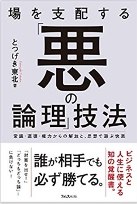

とつげき東北ｼｽﾃﾏﾃｨｯｸ麻雀研究所 1024610+
BGM
★非麻雀関係： 雑記毒と笑いととつげき東北
ギャグエッセイ：なんでやねん(その１、その２) 思想＆毒舌研究： 嫌し系
嫌し系
とつげき東北の最新の文章はnoteで読めます。
2019/03/25
2019/03/26寄付の募集は終了しました。
公開後、24時間ほどの段階で601名、計7,005,934円の寄付があり、目標に到達しました。
今後、以下サイトで支援の状況等を随時更新していくとのことです。
ご協力ありがとうございました。
↑クリックすると該当ページへ。
私も会員である「一般社団法人 日本ハッカー協会」を通じて、
いわゆる「兵庫県警ブラクラ摘発」事件に関する寄付の呼びかけを
行いました。私は３名の発起人のうち１人です。
内容はリンク先にありますとおり、「IT技術開発者や、利用者が、
安心してIT技術を利用できるために必要な寄付」と位置づけています。
その根拠や考え方も説明してあります。
ITMediaでも取り上げられています。
本件で、私に1円たりともお金が入ることはありません。実費すら出ません。
本当に善意で取り組んでいますので、何卒、ご協力をよろしくお願いいたします。
【お知らせ】
2018/12/31をもちまして、Twitterアカウント @totutohoku の発言者は、
本ページ作者、『科学する麻雀』著者であるところの「とつげき東北」では
なくります。後は、「とつげき東北の弟子」等の方々に譲ります。
便宜上、プロフィールはそのままになっていますが、別人であることを
ご了承ください。「とつげき東北」は、Twitterの当該アカウントの発言について、
何ら責任を負いません。
（宣伝等が入ることもあるかと思いますが、個人的なお願いです）
以上、よろしくお願いします。
※色々なところに @totutohoku が残っていたらごめんなさい！
2019/03/19

しぶとく増刷され続ける伝説的な麻雀戦術・研究本！
どうぞよしなに。
とつげき東北著『科学する麻雀』（講談社現代新書）
2018/10/20
2018/10/22 一瞬で4000冊大増刷！ 売れてます！
とつげき東北著「場を支配する『悪の論理』技法」（フォレスト出版）
「なぜ人を殺してはいけないの？」と子どもに聞かれて、明確に答えられますか？
2004年に『麻雀』を科学して革命を起こした筆者が、こんどは『哲学・道徳・善悪』を科学した本！
内容はこんな感じ（動画で紹介）。
できれば書店で……ぜひ手に取ってみてください！
色々な人から購入したという報告いただいています。まさかのYUMIも購入してもらったｗありがと。
2018/10/20に登録されたKindle本341冊中、1位の売れ行きですぉぉぉ！


ついでに科学する麻雀も買ってしまえ！(=´∀｀)人(´∀｀=)
【今日からあなたも東大生！！】
0知識から、大卒レベルの研究力が身につく講義を無料公開！
順次公開します。東京大学で行った講義の発展的再現版です！
「プログラミング・統計学」中心です。文系にも理系にも必要です！
こちら。
●文章とか●
お前はそれでも公務員を目指すのか（2012/4/15）
嘘・デタラメ・ミスリードの嵐、自称ジャーナリスト、若林亜紀の醜態（2012/4/15）
月刊ネット麻雀へ「『オカルト』もリアルからネットへ ―デジタル的オカルトの誕生、あるいは表現のすすめ―」寄稿しました。」
書きかけだよん。「麻雀は個々のプレイヤーにとっていかに過酷か」(PDF) 最終更新：090628
『合理的な不合理主義者としてのアカギ』アカギに関する評論。
2011年5月14,21日（土）等に東京大学駒場キャンパスで行ったプログラミング等関係の講義資料です。
2010年10月1日〜3月31日まで、東京大学で非常勤講師として、統計学・シミュレーション等（＋麻雀関係研究）の講義してきました。
麻雀マンガ家募集は終了しました。参加していただいた方、ありがとうございました。
| しぶとい重版頑張ってる！！ 22刷 増刷決定(19/03/19) まだまだ売れます！ 21刷 増刷決定(16/04/14) そして伝説へ！ 20刷 増刷決定(14/04/17) とつげき東北著『科学する麻雀』講談社現代新書 国立情報学研究所「学術コンテンツ・ポータル」から検索可能な唯一の麻雀本です(笑) 本についての情報 14/10/25 どもども！ 15刷重版確定しました！ 14/04/25 アリガトー！ 14刷！ 13/07/16 どうもです！ 13刷重刷です！ 『おしえて！ 科学する麻雀』（洋泉社） 科学する麻雀の数式などを可能な限りとっぱらい、かつ萌え系に（？）した本です。 順位分布など、細かい部分はカットしてありますが、読みやすいと評判です。 2009年2月発売にして、さっそく増刷されました！ 2017/12/1 『新版 おしえて！ 科学する麻雀』（洋泉社） |
フォローするFollow @totutohoku |
|
初心者のための麻雀講座〜黄金牌を巡る物語〜 でのロングインタビューです。 ルール知らない人、かんたんに麻雀覚えよう動画公開！！（ニコニコ） |
|
ついにテレビ対局キタ―――！！！ 麻雀文章関係： 「麻雀論考」とか題して、ダラダラと書いてみてます。かなりいいかげんですが。 特別寄稿『デジタル麻雀の達人』 （書籍への寄稿です） 致命的欠陥を持つ「Rシステム」への改善案。「麻雀のRatingシステムに関する改善案」（PDF） 順位戦ベースでの変動を維持したまま、オカの影響分を入れるための「Rシステム改善案」（PDF） |
※ソフトウェアの不具合等については、掲示板でお問い合わせください。 ※処理時間上、必ずしも返答を返せるわけではございませんのでご了承ください。 |
うしうし掲示板→掲示板利用許諾 新何切る掲示板(TOP：できすぎ君画像等投稿掲示板等)
★プログラミング関係・公開ソフトウェア：
プログラミング関係リンク・C/C++/API微妙Ｔｉｐｓ 「完全にランダムな乱数」発生ルーチンhdrand.c
 VNCrypt3.70（LZH圧縮解凍機能付・高強度暗号化/復号ツール）
VNCrypt3.70（LZH圧縮解凍機能付・高強度暗号化/復号ツール）
 WinPTA2.54（WINDOWSの影でキーボード入力等を監視し記録する管理・保守ツール）
WinPTA2.54（WINDOWSの影でキーボード入力等を監視し記録する管理・保守ツール）
 高橋名人4.80（連射キー・トリガキー割り当て自在の超高速連打ツール）
高橋名人4.80（連射キー・トリガキー割り当て自在の超高速連打ツール）
CSV対応ソート1.0（CSV形式にも対応した基本的なソートプログラム） 
 できすぎくん5.05（東風成績集計ツール）
できすぎくん5.05（東風成績集計ツール）
 ツモツモ君♪3.7（東風・リーチ時自動和了・ツモ切りツール）
ツモツモ君♪3.7（東風・リーチ時自動和了・ツモ切りツール）
 MJexeIO.DLL0.90（東風荘画面入出力DLL）
MJexeIO.DLL0.90（東風荘画面入出力DLL）
 MJSIM02.00（麻雀研究用シミュレータ）
MJSIM02.00（麻雀研究用シミュレータ）
 FileSHA1.00（ハッシュ値を計算するだけのソフト）
FileSHA1.00（ハッシュ値を計算するだけのソフト）
 Pass1.00（ランダムパスワードを生成するソフト）
Pass1.00（ランダムパスワードを生成するソフト）
 ハンゲームキタ━━(ﾟ∀ﾟ)━━！1.3（ハンゲームのロビーに自動的に接続試行を繰り返すソフト）
ハンゲームキタ━━(ﾟ∀ﾟ)━━！1.3（ハンゲームのロビーに自動的に接続試行を繰り返すソフト）
東風用ボイス
その他のクズプログラムたち
★麻雀関係研究（メイン）：
システマティック麻雀工学
とつ成績 とつ牌譜ＤＬ ヤクマン画像 クソ画像
仲間でワイワイ掲示板 何切る掲示板
みんなで参加しよう！ 何切る掲示板は ↑↑↑ あなたのＨＰトップから無断直リンｏｋです！
★麻雀関係研究（その他）：
（旧）最強水準になるための麻雀講座
旧麻雀講座 初〜中級者向け（内容は古い）
牌譜公開
シスマ内外★実力ランキングCGI版（1000試合以下可能版）
論文等
システマティック麻雀公式集 安定Ｒ・保障安定Ｒって何ですか？
平均順位の偏りと信頼できる実力評価
諸君の「読み」がヘタクソな理由
「和了放銃方程式の定式化」
「順位麻雀とトップ麻雀との実力の比較に関して」
「麻雀の成績比較の方法論」
「Ｒ2000のドヘタ」
「みかけＲ・最高Ｒ・安定Ｒの、実力計測精度の比較」
「流れが存在しないことの証明」
「東風荘のツモは予測できるか」
★★★★

★リンク： ＬＩＮＫ
特別リンク：
初心者のための麻雀講座〜黄金牌を巡る物語〜
麻雀初心者の方はまずこちらに！
ひいいの麻雀研究
意気投合した麻雀の数理研究家！
Cell雀
なんとExcelで麻雀！ プログラム技術としてもすごすぎる！
 ←お気軽にメールください（いたずら等やめてね）。
←お気軽にメールください（いたずら等やめてね）。
アメーバピグの「とつげき東北」は、本物もいますが偽物もいます。かまちはえらいんだけど。